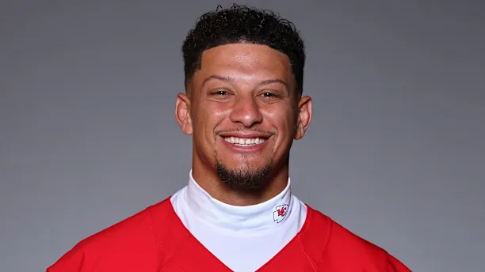
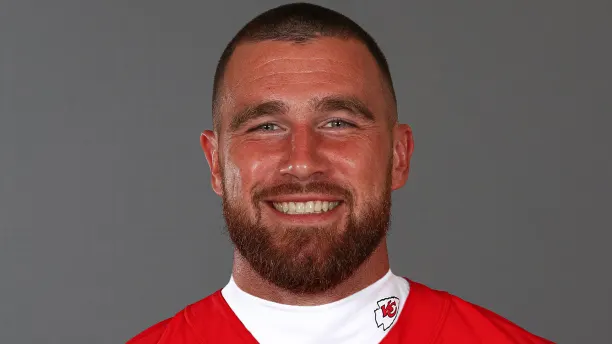
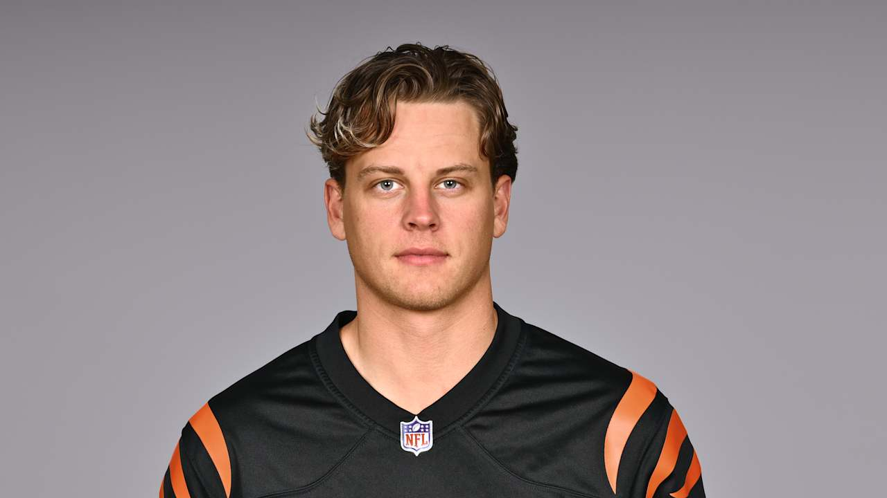
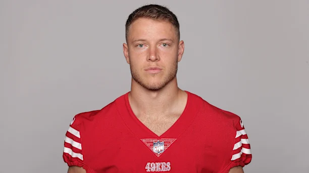
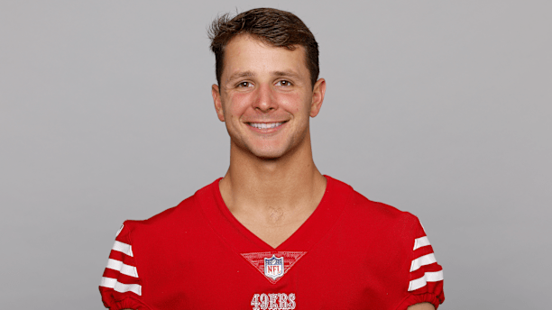
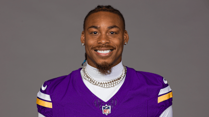
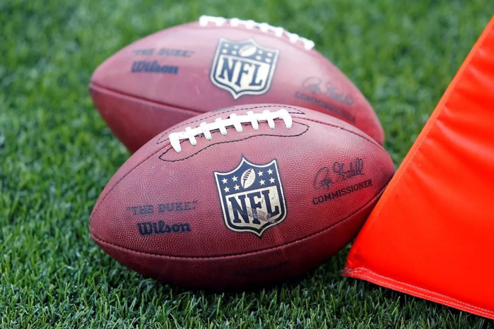
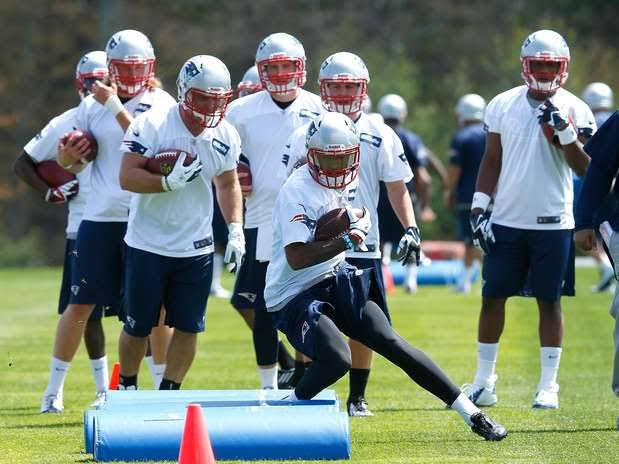

Jugadores con Productos

Patrick Mahomes es el quarterback estrella de los Kansas City Chiefs, conocido por su brazo preciso y habilidades atléticas excepcionales. Ha liderado al equipo a múltiples Super Bowls, ganando tres títulos y siendo nombrado MVP en varios de ellos. Su conexión con compañeros Travis Kelce ha roto récords en touchdowns y recepciones en playoffs.

Travis Kelce es el tight end icónico de los Chiefs, famoso por sus recepciones espectaculares y su química con Mahomes. Con más de 800 recepciones en su carrera y líder en yardas en playoffs entre tight ends, ha sido clave tres victorias de Super Bowl. Fuera del campo, es conocido por su relación con Taylor Swift y su labor filantrópica.

Joseph Lee Burrow, más conocido simplemente como Joe Burrow, es un jugador profesional de fútbol americano. Juega en la posición de quarterback y actualmente milita en las filas de los Cincinnati Bengals de la National Football League. Jugó al fútbol americano universitario en Ohio State y en LSU.

Christian Jackson McCaffrey es un jugador profesional de fútbol americano estadounidense que juega en la posición de running back y actualmente milita en San Francisco 49ers de la National Football League.

Brock Purdy es un jugador profesional de fútbol americano. Juega en la posición de quarterback y actualmente milita en los San Francisco 49ers de la National Football League.

Justin Jamal Jefferson, más conocido como Justin Jefferson, es un jugador profesional estadounidense de fútbol americano que se desempeña en la posición de wide receiver en Minnesota Vikings, equipo de la National Football League.
Sobre Nosotros

No solo te ofrecemos los mejores productos, sino también la información más completa. Te proporcionamos análisis detallados de los partidos de temporada regular, seguimiento en profundidad de cada momento de los playoffs y toda la cobertura y datos del evento más grande del fútbol americano: el Super Bowl. Con nosotros, estarás siempre al día y entenderás cada jugada, cada estrategia y cada hazaña que define la NFL.

¿Quieres pasar de ser un fan a entender realmente lo que sucede en el campo? Ofrecemos cursos diseñados para que aprendas a leer las jugadas, comprender las tácticas defensivas y ofensivas, y apreciar la complejidad estratégica de la NFL. Nuestro objetivo es que no solo lo disfrutes desde el sofá, sino que ganes la confianza para, quién sabe, ¡animarte a jugar flag football o incluso amateur alguna vez! Vive la NFL de una manera nueva y emocionante.
Continúa tu experiencia NFL


¿Qué más ofrecemos?
Más sobre nosotros
Más informacion sobre nosotros
Somos el destino principal para los fans de la NFL, ofreciendo productos
oficiales de todos los equipos y jugadores. Encuentra desde jerseys y gorras
hasta artículos exclusivos de tus estrellas favoritas.
No importa a qué equipo apoyes, aquí hallarás todo para representar tus colores
con orgullo. Conectamos a los fans con el juego mediante artículos de alta calidad
que extienden la experiencia NFL más allá del campo.
¡Bienvenido a la casa del fútbol americano, donde cada fan tiene un lugar!